Next: Types of analysis Up: Materials Previous: User materials Contents
These are models which predict the onset of damage based on the accumulated
equivalent plastic strain. They can only be used for models for which the
equivalent plastic strain is calculated, i.e. *DEFORMATION
PLASTICITY, *PLASTIC (with isotropic
or orthotropic elasticity, including Johnson-Cook hardening),
*CREEP and *MOHR COULOMB. Damage is
initiated if the damage initiation criterion 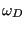 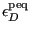
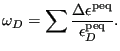 |
(518) |
According to the Rice-Tracey model satisfies:
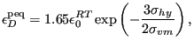 |
(519) |
where
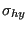 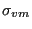 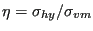
According to the Johnson-Cook model is determined by:
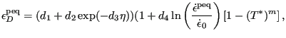 |
(520) |
where
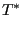 |
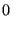 for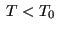 |
||
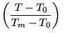 for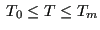 |
|||
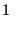 for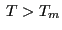 |
(521) |
Here,
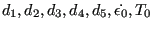 are material constants. The
constant
are material constants. The
constant  has the physical meaning of transition temperature, i.e. the
temperature above which the equivalent strain at the onset of damage starts to
increase and
has the physical meaning of transition temperature, i.e. the
temperature above which the equivalent strain at the onset of damage starts to
increase and  has the
physical meaning of melt temperature, i.e. the temperature above which
remains constant. The model is meant to describe
highly dynamic phenomena.
has the
physical meaning of melt temperature, i.e. the temperature above which
remains constant. The model is meant to describe
highly dynamic phenomena.
As soon as the damage initiation criterion reaches the user-defined limit in any integration point within this element, the element is deleted.